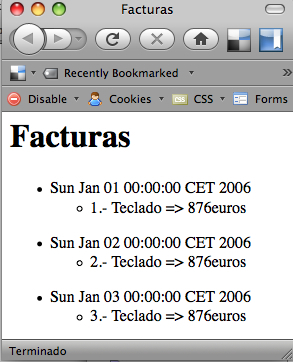

Librerías propias de Groovy
En esta sesión, vamos a introducir diferentes librerías propias de Groovy, para la realización de diversas tareas. En primer lugar veremos los GroovyBuilders, los cuales nos facilitan el trabajo en varios aspectos tales como la escritura de archivos XML y HTML o la automatización de tareas con Ant. Posteriormente definiremos las características que hacen de Groovy un lenguaje perfecto para escribir nuestros propios DSL's (Lenguajes de Especificación de Dominio). Por último, veremos el modelo de abstracción de base de datos que presenta Groovy y las diferentes formas de acceso a las mismas.
Groovy Builders
Los Builders en Groovy se utilizan para hacer que determinadas tareas complejas se conviertan en un juego de niños. Con ellos veremos que la construcción de archivos XML, la automatización de tareas con Ant o el diseño de interfaces gráficas se facilita muchísimo. Empecemos escribiendo archivos XML con los builders que Groovy pone a nuestra disposición.
MarkupBuilder
Los archivos XML son un tipo de archivo ampliamente extendido para el intercambio de información entre aplicaciones, así que Groovy quiere ayudarnos en esa labor, tratando que escribamos el código para construir esos archivos XML de la forma más sencilla y clara posible y el builder encargado de esa labor es MarkupBuilder, el cual nos ayudará a escribir tanto archivos XML como HTML.
El ejemplo que vamos a ver consiste en crear un archivo XML referido a facturas de una empresa. Cada factura contendrá una serie de ítems, cada uno con un producto.
writer = new StringWriter()
builder = new groovy.xml.MarkupBuilder(writer)
facturas = builder.facturas {
for (dia in 1..3) {
factura(fecha: new Date(106,0,dia)) {
item(id:dia){
producto(nombre: 'Teclado', euros:876)
}
}
}
}
result = writer.toString().replaceAll("\r","")
Lo que produciría el siguiente archivo XML.
<facturas> <factura fecha='Sun Jan 01 00:00:00 CET 2006'> <item id='1'> <producto nombre='Teclado' euros='876' /> </item> </factura> <factura fecha='Mon Jan 02 00:00:00 CET 2006'> <item id='2'> <producto nombre='Teclado' euros='876' /> </item> </factura> <factura fecha='Tue Jan 03 00:00:00 CET 2006'> <item id='3'> <producto nombre='Teclado' euros='876' /> </item> </factura> </facturas>
Se puede comprobar que la limpieza del código utilizado para generar el archivo XML es increíble y prácticamente, el código sigue el mismo tabulado que el posterior archivo XML, con lo que la lectura del código por terceras personas se facilita muchísimo.
Pero MarkupBuilder no sólo nos va a servir para generar archivos XML, sino también archivos HTML. No es raro, puesto que HTML es en el fondo XML. Veamos como construir el mismo ejemplo anterior para que se vea como una página web. Un ejemplo de página web podría ser el siguiente:
<html> <head> <title>Facturas</title> </head> <body> <h1>Facturas</h1> <ul> <li>Sun Jan 01 00:00:00 CET 2006</li> <ul> <li>1.- Teclado => 876euros</li> </ul> </ul> <ul> <li>Sun Jan 02 00:00:00 CET 2006</li> <ul> <li>2.- Teclado => 876euros</li> </ul> </ul> <ul> <li>Sun Jan 03 00:00:00 CET 2006</li> <ul> <li>3.- Teclado => 876euros</li> </ul> </ul> </body> </html>
Que produciría algo así:

Este ejemplo de HTML se podría construir con el siguiente código, haciendo uso de MarkupBuilder.
def writer = new StringWriter()
def builder = new groovy.xml.MarkupBuilder()
builder.html {
head {
title 'Facturas'
}
body {
h1 'Facturas'
for (dia in 1..3){
ul{
li new Date(106,0,dia).toString()
ul {
li "$dia.- Teclado => 876euros"
}
}
}
}
}
El código HTML generado por MarkupBuilder será compatible con los estándares y no tendremos incluso que preocuparnos por la conversión de determinados caracteres como el símbolo < (<), ya que él mismo será el encargado de realizar dicha conversión.
AntBuilder
Ant es una herramienta ampliamente utilizada para la automatización de tareas, tales como la manipulación del sistema de ficheros, compilación de ficheros fuente, ejecución de pruebas, etc. El uso de Ant con las librerías de Java en ocasiones se hace muy pesado, pero en Groovy disponemos del builder AntBuilder para hacer de esta tarea algo trivial.
El ejemplo que se muestra a continuación, es un típico fichero de Ant, con el que se eliminarán todos los archivos de un directorio destino y posteriormente se copiarán todos los archivos .doc de un determinado directorio, obviando los archivos temporales (~*).
<project name="prepararDirectorioLibros" default="copy">
<property name="destino.dir" value="destino"/>
<property name="capitulos.dir" value="capitulos"/>
<target name="copy">
<delete dir="${destino.dir}" />
<copy todir="${destino.dir}">
<fileset dir="${capitulos.dir}"
includes="*.doc"
excludes="~*" />
</copy>
</target>
</project>
En Groovy ya no será necesario utilizar Ant ni su sintaxis tipo XML para este tipo de tareas, ya que podemos utilizar AntBuilder para estos quehaceres. El siguiente ejemplo muestra como sería el script en Groovy con la misma funcionalidad que el ejemplo anterior.
DESTINO_DIR = 'destino'
CAPITULOS_DIR = 'capitulos'
ant = new AntBuilder()
ant.delete(dir:DESTINO_DIR)
ant.copy(todir:DESTINO_DIR){
fileset(dir:CAPITULOS_DIR, includes:'*.doc', excludes:'~*')
}
Para convertir un archivo en formato Ant en uno que funcione en Groovy, debemos seguir las siguientes reglas:
- Las tareas en Ant se corresponden con los nombres de los métodos en AntBuilder
- Los atributos de Ant se pasan en forma de mapa a los métodos de AntBuilder
- En aquellos lugares donde con Ant era obligatorio utilizar cadenas de texto para escribir otros tipos de datos (valor:"1", analizado:"true"), con AntBuilder se pueden utilizar sus tipos de datos correspondientes (valor:1, analizado:true).
DSL's
Las siglas de DSL son el acrónimo de Domain Specific Language que traducido significa Lenguaje específico de Dominio. Un DSL es un lenguaje de programación reducido que permite representar el conocimiento de un campo específico. Imaginemos una aplicación que se encargue de la toma de decisiones en el entorno financiero. Para realizar la programación en Java o Groovy, quien se encargue de esta programación debería tener los conocimientos necesarios del sistema financiero así como del lenguaje de programación utilizado. Utilizando un DSL nos ahorraremos las reglas específicas del lenguaje de programación, centrando nuestros objetivos en la especificación de las reglas financieras necesarias para el correcto funcionamiento del sistema.
Se dice de Groovy que es un buen lenguaje para escribir DSLs. ¿Por qué? Pues simplemente porque es un lenguaje dinámico que nos proporciona mucha libertad a la hora de crear estructuras necesarias en un contexto particular. Las características de Groovy que lo hacen idóneo para escribir DSLs son:
- Los Builders nos permiten crear estructuras en forma de árbol estructurado
- Se pueden añadir nuevos métodos y propiedades a través de categorías y metaclases. Incluso se puede hacer esto con los números para especificar cosas como 4.veces o 24.horas
- La mayoría de los operadores se pueden sobrecargar para poder hacer cosas como totalMinutos = 4.dias + 12.horas
- Utilizar un mapa como parámetro en un método es muy intuitivo, como por ejemplo mover(x:500.metros, y:2:kilometros)
- También podemos crear nuevas estructuras de control utilizando los closures, como por ejemplo siFaltaMenosDeUnDia{...}
Un ejemplo de DSL puede ser GORM, del que hablaremos posteriormente. GORM es el framework de persistencia utilizando en Grails. Basado en Hibernate, podemos utilizar GORM sin haber visto en nuestra vida nada sobre Hibernate, simplemente conociendo el modelo de datos. Por ejemplo, imaginemos que tenemos una clase Persona mapeada contra una tabla de la base de datos. Gracias a GORM, podríamos acceder a los datos de la siguiente forma:
class Persona{
Date fechaNacimiento
String nombre
String apellidos
}
//Para acceder a los datos de las Personas con GORM se haría así
def lista1 = Persona.findByNombre("Manuel")
def lista2 = Persona.findByNombreNotNull()
def lista3 = Persona.findByNombreLike("Ma%")
def lista4 = Persona.findByFechaNacimientoBetween(fecha1,fecha2)
def lista5 = Persona.findByNombreLikeOrApellidoLike("M%", "L%")
De esta forma el programador no necesita conocer a fondo la sintaxis de SQL para generar sentencias y puede centrarse en desarrollar la lógica de negocio de la aplicación.
Pero para ver una utilidad de lo que son los DSLs, vamos a desarrollar un ejemplo que permite la conversión entre unidades de distancia sin problemas. De esta forma, cualquier persona sin conocimientos de Groovy, podría escribir unas líneas de código sin demasiado esfuerzo.
La idea del ejemplo, es que se puedan realizar operaciones entre variables que contienen distancias medidas en diferentes unidades (metros, kilómetros, centímetros, etc). Para ello, en primer lugar vamos a crear la clase Distancia y vamos a sobrecargar los operadores + y -, que como vimos en la sesión 2, se referirá a sobrecargar realmente los métodos plus() y minus().
class Distancia implements Comparable {
BigDecimal longitud
Unidad unidad
Distancia plus(Distancia operando) {
def nuevaLongitud = this.longitud + Unidad.convertirUnidad(operando, this.unidad)
new Distancia(longitud : nuevaLongitud, unidad : this.unidad)
}
Distancia minus(Distancia operando) {
def nuevaLongitud = this.longitud - Unidad.convertirUnidad(operando, this.unidad)
new Distancia(longitud : nuevaLongitud, unidad : this.unidad)
}
int compareTo(otro) {
if(this.unidad == otro.unidad)
return this.longitud <=> otro.longitud
return this.longitud <=> Unidad.convertirUnidad(otro, this.unidad)
}
String toString() {
"$longitud $unidad.nombre"
}
}
La clase también debe sobrecargar el método compareTo() para comprobar que no sólo la longitud es la misma, sino también la Unidad.
El siguiente paso consistirá en crear la clase Unidad. Esta clase será la encargada de convertir las unidades para que puedan ser operadas entre si. La clave de esta clase es la tabla que define la relación entre todas las unidades.
class Unidad {
def ratio
String nombre
static def convertirUnidad(Distancia d, Unidad nuevaUnidad) {
def factor = ratioTabla[d.unidad.ratio][nuevaUnidad.ratio]
if(factor)
return d.longitud * factor
else
return d.longitud / ratioTabla[nuevaUnidad.ratio][d.unidad.ratio]
}
static ratioTabla = [
// mm, cm, m, km, y, mi
[ 1, 0, 0, 0, 0, 0 ], // mm
[ 10, 1, 0, 0, 0, 0 ], // cm
[ 1e3, 1e2, 1, 0, 0, 0 ], // m
[ 1e6, 1e5, 1e3, 1, 0, 0 ], // km
[ 914.4, 91.44, 0.9144, 0.9144e-3, 1, 0 ], // yd
[ 1.609344e6, 1.609344e5, 1.609344e3, 1.609344, 1760, 1 ], // mi
]
public static final mm = new Unidad(ratio : 0, nombre : "milímetros")
public static final cm = new Unidad(ratio : 1, nombre : "centímetros")
public static final m = new Unidad(ratio : 2, nombre : "metros")
public static final km = new Unidad(ratio : 3, nombre : "kilometros")
public static final yd = new Unidad(ratio : 4, nombre : "yarda")
public static final mi = new Unidad(ratio : 5, nombre : "milla(s)")
}
Por último, para crear el DSL necesitamos crear una categoría que implemente los métodos get() para los tipos de datos Number y Distancia. Al definir el método get() por el tipo de dato Number permitiremos utilizar la notación 4.3.mi, mientras que al hacer lo propio con el tipo de dato Distancia podremos utilizar la notación 4.3.mi.km para hacer una conversión al vuelo de millas a kilómetros. La nueva clase quedaría así:
class DistanciaCategoria {
static Distancia getMm(Number n) {
new Distancia(longitud : n, unidad : Unidad.mm)
}
static Distancia getMm(Distancia d) {
new Distancia(longitud : Unidad.convertirUnidad(d, Unidad.mm), unidad : Unidad.mm)
}
static Distancia getCm(Number n) {
new Distancia(longitud : n, unidad : Unidad.cm)
}
static Distancia getCm(Distancia d) {
new Distancia(longitud : Unidad.convertirUnidad(d, Unidad.cm), unidad : Unidad.cm)
}
static Distancia getM(Number n) {
new Distancia(longitud : n, unidad : Unidad.m)
}
static Distancia getM(Distancia d) {
new Distancia(longitud : Unidad.convertirUnidad(d, Unidad.m), unidad : Unidad.m)
}
static Distancia getKm(Number n) {
new Distancia(longitud : n, unidad : Unidad.km)
}
static Distancia getKm(Distancia d) {
new Distancia(longitud : Unidad.convertirUnidad(d, Unidad.km), unidad : Unidad.km)
}
static Distancia getYd(Number n) {
new Distancia(longitud : n, unidad : Unidad.yd)
}
static Distancia getYd(Distancia d) {
new Distancia(longitud : Unidad.convertirUnidad(d, Unidad.yd), unidad : Unidad.yd)
}
static Distancia getMi(Number n) {
new Distancia(longitud : n, unidad : Unidad.mi)
}
static Distancia getMi(Distancia d) {
new Distancia(longitud : Unidad.convertirUnidad(d, Unidad.mi), unidad : Unidad.mi)
}
}
Ya sólo nos queda probarlo todo. Vamos a intentar hacer una serie de operaciones entre diferentes unidades de medida de distancia.
use(DistanciaCategoria.class) {
def d1 = 1.m
def d2 = 1.yd
def d3 = 1760.yd
def d4 = 100.cm
println d1 + 1.yd
println 1.yd + 1.mi
println 1.m - 1.yd
println d2.m
println d3.mi
println d4.m
println 1000.yd.km
println 1000.yd
}
Tratamiento de archivos XML
La lectura de los archivos XML es una tarea habitual en cualquier tipo de proyecto software y que en ocasiones se vuelve muy compleja. Groovy dispone de tres métodos diferentes para la lectura de archivos XML:
- Mediante las rutas del DOM y las mejoras introducidas en las clases XmlParser y XmlSlurper
- El analizador basado en eventos SAX
- Y el método analizador StAX
El método que vamos a ver en esta sesión será utilizando las rutas del DOM y las clases XmlParser y XmlSlurper.
En primer lugar, vamos a exponer un ejemplo de un archivo XML con el que trabajaremos en la lectura del mismo. El ejemplo supone establecer un plan de horas de estudio semanales con un máximo de horas por semana y una serie de tareas en cada semana, con el control del número de horas dedicadas al estudio para cada tarea.
<plan> <semana maximo="10"> <tarea prevision="3" hechas="3" titulo="Aserciones"/> <tarea prevision="4" hechas="4" titulo="GroovyBeans"/> <tarea prevision="2" hechas="1" titulo="Librería GString"/> </semana> <semana maximo="10"> <tarea prevision="3" hechas="0" titulo="Groovy Builders"/> <tarea prevision="2" hechas="0" titulo="GORM"/> <tarea prevision="2" hechas="0" titulo="DSLs"/> </semana> </plan>
A partir de este archivo xml, desarrollaremos un ejemplo completo en Groovy para proceder a su lectura. Para leer un archivo xml en Groovy,podemos utilizar una clase llamada XmlParser. Con esta clase, podemos acceder a los nodos del archivo xml como si estuviésemos accediendo a un array, mientras que los atributos estarán accesibles por medio del operador @, tal y como podemos comprobar en el siguiente ejemplo.
def plan = new XmlParser().parse(new File('datos/plan.xml'))
assert 'plan' == plan.name()
assert 'semana' == plan.semana[0].name()
assert 'tarea' == plan.semana[0].tarea[0].name()
assert 'GroovyBeans' == plan.semana[0].tarea[1].@titulo
Para definir el analizador, ni siquiera es necesario importar ningún paquete, puesto que la clase XmlParser forma parte del paquete groovy.util, uno de los que Groovy importa automáticamente. El analizador devuelve un objeto del tipo groovy.util.Node. Pero además de la clase XmlParser, Groovy dispone de la clase XmlSlurper que añade nuevas funcionalidades. Ambas clases comparten el método parse(), el cual puede recibir diversos tipos de objetos.
| Método | Comentario |
|---|---|
| parse(InputSource is) | Lee un objeto de la clase org.xml.sax.InputSource |
| parse(File file) | Lee un objeto de la clase java.io.File |
| parse(InputStream is) | Lee un objeto de la clase java.io.InputStream |
| parse(Reader r) | Lee un objeto de la clase java.io.Reader |
| parse(String uri) | Lee el contenido apuntado por la dirección uri |
| parseText(String text) | Utiliza el parámetro text como entrada |
La diferencia de estos métodos en ambas clases es que XmlParser devuelve objetos del tipo groovy.util.Node mientras que XmlSlurper lo hace del tipo GPathResult. La siguiente tabla muestra un listado con los métodos más habituales en ambas clases.
| Método XmlParser | Método XmlSlurper |
|---|---|
| Object name() | String name() |
| String text() | String text() |
| String toString() | String toString() |
| Node parent() | GPathResult parent() |
| List children() | GPathResult children() |
| Map attributes() | Map attributes() |
| Iterator iterator() | Iterator iterator() |
| List depthFirst() | Iterator depthFirst() |
| List breadthFirst() | Iterator breadthFirst() |
En ambas clases (XmlParser y XmlSlurper), el acceso a los elementos hijo y sus atributos se hace como si fueran propiedades del objeto, tal y como se muestra en la siguiente tabla.
| Node (XmlParser) | GPathResult (XmlSlurper) | Significado |
|---|---|---|
| ['nombreElemento'] .nombreElemento |
['nombreElemento'] .nombreElemento |
Todos los elementos con este nombre |
| [indice] | [indice] | Elemento hijo que coincida con el índice |
| ['@nombreAtributo'] .'@nombreAtributo' |
['@nombreAtributo'] .'@nombreAtributo' .@nombreAtributo |
El valor del atributo con este nombre |
El siguiente fragmento de código muestra diferentes ejemplos de acceso con ambas clases sobre el archivo xml utilizado anteriormente. Como puedes observar, no hay diferencias en utilizar ambas clases.
def node = new XmlParser().parse(new File('datos/plan.xml'))
def gpath = new XmlSlurper().parse(new File('datos/plan.xml'))
assert 'plan' == node.name()
assert 'plan' == gpath.name()
assert 2 == node.children().size()
assert 2 == gpath.children().size()
assert 6 == node.semana.tarea.size()
assert 6 == gpath.semana.tarea.size()
assert 8 == node.semana.tarea.'@hechas'*.toInteger().sum()
assert gpath.semana[1].tarea.every{ it.'@hechas' == '0'}
Pero, ¿para que queremos dos clases que hacen lo mismo y funcionan exactamente igual? En realidad, ambas clases no funcionan igual y esas diferencias se ven sobre todo cuando hablamos de tareas más avanzadas que los simples ejemplos sobre los que hemos trabajado. Si pudiéramos medir el rendimiento de ambas clases sobre el ejemplo anterior, veríamos que obtendríamos resultados muy similares. Pero con ejemplos más complejos, la cosa cambia y cambian porque XmlParser necesita almacenar en memoria el contenido del archivo xml mientras que con XmlSlurper el procesamiento de las operaciones no se realiza hasta que no son solicitadas. Por ejemplo, para procesar la sentencia node.semana.tarea.'@hechas' con XmlParser se crean: una lista con las semanas (dos entradas), una lista con las tareas (seis entradas) y una lista de los valores del atributo hechas (seis valores). Sin embargo, con XmlSlurper este consumo extra de memoria no existe.
Bases de datos
Las bases de datos relacionales se basan en el modelo relacional, que como estándar para realizar todo tipo de operaciones utiliza el lenguaje SQL(Structured Query Language). Muchos lenguajes de programación (PHP, Python, Ruby, etc) ofrecen un acceso rápido e inmediato a las operaciones con la base de datos, mientras que Java utiliza JDBC (Java Database Connectivity), que no suele ser tan sencillo. Por su parte Groovy se basa también en JDBC, pero añade la librería groovy.sql con cuatro clases (Sql, DataSet, GroovyResultSet y GroovyRowResult) que facilitan este acceso.
En esta sección vamos a ver como realizar las operaciones básicas sobre las bases de datos como son el establecimiento de la conexión con la base de datos, la creación del esquema de las mismas y el trabajo con algunos datos.
Trabajar directamente con SQL
Empezaremos por el establecimiento de la conexión con la base de datos. La instalación de Groovy no viene con ninguna base de datos, sin embargo, podemos utilizar cualquier sistema de base de datos con su correspondiente controlador JDBC. En esta sección vamos a utilizar HSQLDB (http://hsqldb.org). Su instalación es tan simple como copiar el correspondiente hsqldb.jar en el classpath. Para hacer esto, simplemente copiamos el archivo hsqldb.jar al directorio lib de la instalación de Groovy. HSQLDB puede funcionar de tres formas diferentes: como servidor de base de datos, mediante ficheros o de forma no persistente como una base de datos almacenada en memoria. Nosotros utilizaremos esta última, aunque utilizar cualquier otra, no supondría muchos cambios.
Para realizar la conexión con la base de datos, necesitamos utilizar un objeto del tipo groovy.sql.Sql y un método llamado newInstance() indicándole la siguiente información de acceso:
- URL de la base de datos
- Usuario de la base de datos
- Contraseña
- Controlador. En nuestro caso org.hsqldb.jdbcDriver
Nosotros vamos a crear una base de datos llamada biblioteca.
import groovy.sql.Sql
db = Sql.newInstance(
'jdbc:hsqldb:mem:Biblioteca',
'sa',
'',
'org.hsqldb.jdbcDriver')
Ya tenemos creada la base de datos Biblioteca y su referencia a la misma mediante la variable db. A continuación vamos a crear nuestra primera tabla en la base de datos. Lo haremos con la tabla Escritores que contendrá un nombre, apellidos y fecha de nacimiento. También crearemos el campo idEscritor que se utilizará como clave primaria de la tabla. Para ello utilizaremos el método execute() al cual le pasaremos la sentencia para crear dicha tabla. Antes de crear la tabla, comprobamos si existe una con el mismo nombre y en caso afirmativo, la eliminamos.
db.execute '''
DROP TABLE Escritores IF EXISTS;
CREATE TABLE Escritores (
idEscritor INTEGER GENERATED BY DEFAULT as IDENTITY,
nombre VARCHAR(128),
apellidos VARCHAR (128),
fechaNacimiento DATE
);
'''
Una vez ya tenemos creada nuestra primera tabla en la base de datos, vamos a ver como introducir nuestros primeros registros. Utilizaremos el mismo método execute() y le pasaremos las sentencias SQL para la introducción de estos datos.
db.execute '''
INSERT INTO Escritores (nombre, apellidos, fechaNacimiento)
VALUES ('Camilo José', 'Cela Trulock', '1916-05-11');
INSERT INTO Escritores (nombre, apellidos, fechaNacimiento)
VALUES ('Miguel', 'de Cervantes Saavedra', '1547-09-29');
INSERT INTO Escritores (nombre, apellidos, fechaNacimiento)
VALUES ('Miguel', 'Hernández Gilabert', '1910-10-30');
INSERT INTO Escritores (nombre, apellidos, fechaNacimiento)
VALUES ('Felix', 'Lope de Vega y Carpio', '1562-11-25');
'''
Esta forma de introducir los datos en la tabla contiene muchos datos duplicados, ya que la parte INSERT INTO Escritores (nombre, apellidos, fechaNacimiento) VALUE siempre se repite sin aportar nada nuevo a la sentencia. Existen otras formas mejores de introducir estos datos, como pueden ser las preparedStatement. El siguiente ejemplo de introducción de datos, utiliza una preparedStatement y como puedes observar, cada carácter ? de la misma se sustituye por cada uno de los parámetros pasados a la función.
String insertaEscritores = '''
INSERT INTO Escritores (nombre, apellidos, fechaNacimiento)
VALUES (?,?,?);
'''
db.execute insertaEscritores, ['Camilo José', 'Cela Trulock', '1916-05-11']
db.execute insertaEscritores, ['Miguel', 'de Cervantes Saavedra', '1547-09-29']
db.execute insertaEscritores, ['Miguel', 'Hernández Gilabert', '1910-10-30']
db.execute insertaEscritores, ['Felix', 'Lope de Vega y Carpio', '1562-11-25']
Sin embargo, esta forma también tiene sus problemas. En nuestro ejemplo, sólo tenemos que insertar tres campos en cada registro, pero imagina el caso de tener que insertar muchos campos. Esto complicaría la inserción ya que podríamos confundir cada hueco donde insertar los valores. Para solucionar esto, podemos utilizar un Mapa para insertar los datos de los escritores y posteriormente utilizar un closure con este mapa y realizar las inserciones correspondientes.
def escritores = [
[nombre:'Camilo José', apellidos:'Cela Trulock', fechaNacimiento:'1916-05-11'],
[nombre:'Miguel', apellidos:'de Cervantes Saavedra', fechaNacimiento:'1547-09-29'],
[nombre:'Miguel', apellidos:'Hernández Gilabert', fechaNacimiento:'1910-10-30'],
[nombre:'Felix', apellidos:'Lope de Vega y Carpio', fechaNacimiento:'1562-11-25']
]
escritores.each{
db.execute """
INSERT INTO Escritores (nombre, apellidos, fechaNacimiento)
VALUES (${it.nombre}, ${it.apellidos}, ${it.fechaNacimiento});
"""
}
Ahora que ya hemos conectado con la base de datos y realizado nuestras primeras inserciones, llega el turno a realizar el borrado de registros y su modificación. Para eliminar un registro, simplemente tendremos que utilizar la sentencia SQL DELETE. En nuestro eliminaremos aquellos escritores cuyos apellidos sean "Hernández Gilabert"
db.execute '''
DELETE FROM Escritores WHERE apellidos = 'Hernández Gilabert'
'''
Mientras que para la realización de modificaciones a los registros utilizaremos la sentencia SQL UPDATE. Queremos modificar el nombre de Felix, para añadirle su correspondiente acento para quedar como Félix.
db.execute '''
UPDATE Escritores SET nombre='Felix' WHERE nombre='Félix'
'''
El método execute() devuelve un valor booleano, indicando si la sentencia devuelve o no un objeto del tipo ResultSet. También existe otra forma de ejecutar la sentencias de modificación de registros para saber, cuantos registros se han visto afectados y es la sentencia executeUpdate.
db.executeUpdate '''
UPDATE Escritores SET nombre='Félix' WHERE nombre='Felix'
'''
De las cuatro operaciones básicas que se realizan sobre las bases de datos, creación, lectura, modificación y borrado, ya sólo nos queda por ver la lectura, para saber como recuperar los datos almacenados. Para la recuperación de estos datos, Groovy dispone de cuatro métodos:
- void eachRow()
- void query()
- List rows()
- Object firstRow()
Empecemos por el método eachRow(). Este método recibe como primer parámetro, la sentencia SQL a ejecutar y como segundo parámetro, disponemos de un closure para hacer con los datos obtenidos de la sentencia SQL lo que queramos. Vamos a imprimir un listado que muestre todos los escritores almacenados en la base de datos, separados por una línea de guiones.
println "-------------------- Escritores --------------------"
db.eachRow('SELECT * FROM Escritores'){
println "${it.nombre} ${it.apellidos}, nacido el ${it.fechaNacimiento}"
println "-" * 52
}
De igual forma que accedemos mediante el operador punto (.), también podemos hacerlo como si fuera una lista mediante el operador corchete ([]).
println "-------------------- Escritores --------------------"
db.eachRow('SELECT nombre, apellidos, fechaNacimiento FROM Escritores'){ row ->
println row[0] + ' ' + row[1] + ', nacido el ' + row[2]
println "-" * 52
}
Otro método utilizado para recuperar los datos es query(). Este método recibe igualmente como primer parámetro una sentencia SQL y como segundo parámetro un closure. Este método permite trabajar en el closure con un objeto del tipo ResultSet y para movernos por los resultados, deberemos iterar nosotros mismos por este objeto. Para acceder a los campos devueltos por la sentencia SQL, necesitamos métodos del tipo getString(), getDate(), tal y como vemos en el ejemplo.
db.query('SELECT nombre, apellidos, fechaNacimiento FROM Escritores') { resultSet ->
if (resultSet.next()){
println resultSet.getString('nombre') + ' '+resultSet.getString(2) + ', nacido el '+ resultSet.getDate('fechaNacimiento')
}
}
Podemos acceder bien por el nombre del campo o por su posición, teniendo en cuenta que se empieza por el valor 1.
Siguiendo con los métodos existentes para leer datos de una tabla, nos encontramos con el método rows() que devuelve una lista con todas las filas encontradas por la sentencia SQL. Posteriormente, esta lista puede ser recorrida, tal y como vimos en la sesión 2. Veamos un ejemplo para mostrar todos los escritores en una sola línea.
List escritores = db.rows('SELECT nombre, apellidos FROM Escritores')
println "Tenemos ${escritores.size()} en la base de datos:"
println escritores.collect{"${it.nombre} ${it.apellidos}"}.join(", ")
Por último, el método firstRow() es como si ejecutáramos el método rows() y sólo tuviéramos en cuenta la posición 0 de la lista devuelta.
def primerEscritor = db.firstRow('SELECT nombre, apellidos FROM Escritores')
println primerEscritor.nombre + ' ' +primerEscritor.apellidos
Trabajar con DataSets
El lenguaje SQL es una disciplina que puede quedar lejos del trabajo real de un programador, así que facilitarles esta tarea es algo fundamental. En este sentido, Groovy dispone del concepto de DataSet, que nos permitirá añadir filas a una tabla y extraer sus registros. Sin embargo, los DataSets no permiten crear el esquema de la base de datos, ni realizar operaciones del tipo delete o update.
Podemos crear un objeto del tipo DataSet mediante el método dataSet() de la clase groovy.sql.Sql: dataSetEscritores = db.dataSet('Escritores'). Una vez creado el DataSet, ya podemos ejecutar cualquiera de los métodos de la clase. El método add() recibe una mapa con los valores a introducir como nuevo registro.
dataSetEscritores.add(
nombre: 'Luis',
apellidos: 'de Góngora y Argote',
fechaNacimiento: '1561-07-11'
)
De esta forma, no necesitamos introducir sentencias SQL para introducir nuevos registros en la base de datos. Para recorrer los registros del DataSet, podemos utilizar también el método each(), que recibe como parámetro un closure.
dataSetEscritores.each {
println "${it.nombre} ${it.apellidos}, nacido el ${it.fechaNacimiento}"
}
Existe también el método findAll() para obtener sólo los registros que cumplen una determinada condición. Imagina que queremos obtener los escritores de nuestra base de datos nacidos en el siglo XX. Este método devuelve a su vez un objeto del tipo DataSet, con lo que podemos recorrer sus resultados de igual forma que acabamos de hacer en el ejemplo anterior.
escritoresSigloXX = dataSetEscritores.findAll{ it.fechaNacimiento > '1900-1-1' }
escritoresSigloXX.each{ println it.nombre +' '+it.apellidos }
Los objetos del tipo DataSet nos permiten acceder a determinadas propiedades de la sentencia SQL que se corresponde con el actual DataSet y los parámetros pasados. Si accedemos a estas propiedades del DataSet escritoresSigloXX, obtenemos el siguiente resultado
println escritoresSigloXX.sql println escritoresSigloXX.parameters ----Resultado--------------------------- select * from Escritores where fechaNacimiento > ? [1900-1-1]
Todo lo que hemos hecho hasta ahora, es trabajar con una sola tabla, lo cual no suele ser lo más habitual en el modelo relacional. Imaginemos que los escritores de nuestra base de datos, como es normal, han escrito libros, que estarán almacenados en otra tabla con una clave ajena que contiene la información sobre el escritor. En el siguiente ejemplo queremos obtener un listado con los libros almacenados en la tabla correspondiente y el nombre y apellidos de su autor. Empecemos por crear la tabla correspondiente e insertar algunos datos de ejemplo.
db.execute '''
DROP TABLE Libros IF EXISTS;
CREATE TABLE Libros (
idLibro INTEGER GENERATED BY DEFAULT as IDENTITY,
titulo VARCHAR(128),
anyo INTEGER,
fkEscritor INTEGER
);
'''
def insertaLibros(titulo, anyo, apellidos) {
db.execute """
INSERT INTO Libros(titulo, anyo, fkEscritor)
SELECT $titulo, $anyo, idEscritor
FROM Escritores
WHERE apellidos=$apellidos
"""
}
insertaLibros('La colmena', 1951, 'Cela Trulock')
insertaLibros('Rol de cornudos', 1976, 'Cela Trulock')
insertaLibros('La galatea', 1585, 'de Cervantes Saavedra')
insertaLibros('El ingenioso hidalgo don Quijote de la Mancha', 1605, 'de Cervantes Saavedra')
insertaLibros('La dorotea', 1632, 'Lope de Vega y Carpio')
insertaLibros('La dragontea', 1602, 'Lope de Vega y Carpio')
Ahora ya tenemos datos en ambas tablas y un campo en la tabla Libros que indica que escritor ha escrito cada libro. Para listar los libros con su correspondiente autor, debemos crear una vista que combine los Libros con los Escritores. Veamos como:
db.execute '''
DROP VIEW EscritoresLibros IF EXISTS;
CREATE VIEW EscritoresLibros AS
SELECT * FROM Escritores INNER JOIN Libros
ON fkEscritor=idEscritor
'''
escritoresLibros = db.dataSet('EscritoresLibros')
escritoresLibros.each {
println it.titulo + '(' + it.anyo + '), escrito por ' +it.nombre + ' ' + it.apellidos
}
Con el uso de los DataSets lo que conseguimos es eliminar los conocimientos necesarios del lenguaje SQL y hacer el código más portable
GORM (Groovy ORM)
Desde hace un tiempo, se intenta que el acceso a las bases de datos se haga de la forma más sencilla y amena posible y para ello se creó el modelo ORM (Object-Relational Mapping), que intenta que el acceso a la base de datos se haga utilizando objetos, aprovechando de esta forma el modelo orientado a objetos. Se recuperan los datos como objetos, se manipulan y posteriormente se vuelcan los cambios a la base de datos en caso de que sea necesario. Es el propio sistema ORM quien se encarga de que se cumplan las restricciones correspondientes.
En el mundo de Java hay fundamentalmente dos sistemas ampliamente utilizados: Java Data Objects y Hibernate. Por su parte, desde el proyecto Grails, se está desarrollando un ORM propio de Groovy (GORM), basado en Hibernate y que veremos profúndamente cuando hablemos de Grails.